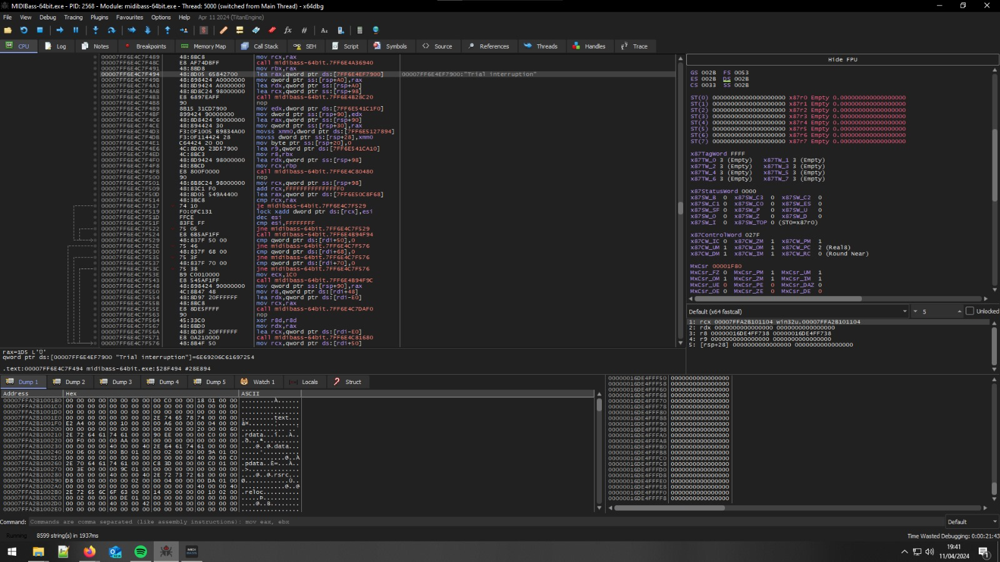

Ho provato a sperimentare con l'implementazione di Unity in C++, ma il codice non e' documentato e non si capisce cosa faccia, e lavorare con gli slider forniti sembra non fare niente di utile oltre che peggiorare il tracciamento gia' malfunzionante.
Ho misurato il ritardo nella soluzione di ieri ed era approssimativamente 400 millisecondi, che secondo me e' un valore troppo grande. Di fronte a questo valore ho scelto di provare un prodotto commerciale chiamato BASS MIDI, con il quale sono riuscito ad ottenere un ritardo inferiore a 200 millisecondi (in media sembra oscillare tra i 125 e i 160 millisecondi, 200 millisecondi e' il valore peggiore rilevato), che mi sembra adeguato. Il problema di questo prodotto e' che costa 180 EURO!!!! (e richiede una connessione ad internet...), quindi di fronte a questo penso sia meglio prendere il Sonuus i2m a 100 euro che dovrebbe avere ancora meno lag (e non richiede una connessione ad internet dal momento che e' hardware e non software tirchio).
La versione trial di BASS MIDI ha un timer di 2 minuti dopo il quale l'output si spegne, quindi ho provato a craccarlo cercando il valore in RAM che contenesse il timer, per poterlo re-incrementare periodicamente estendendo all'infinito il trial: purtroppo non ci sono riuscito ma sono bensi' riuscito a far crashare il programma piu' volte B-) .
A questo punto sono vicino a comprare il Sonuus i2m a 100 euro e basta, sono stufo di sto problema.